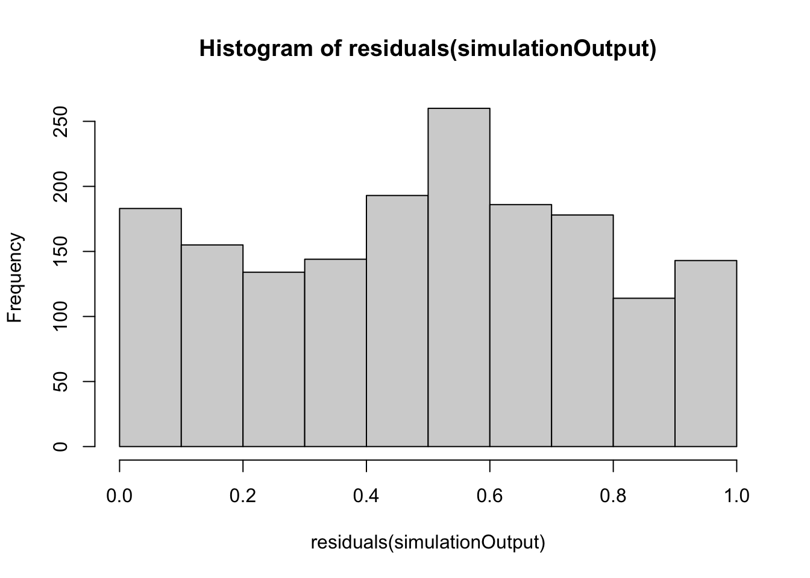
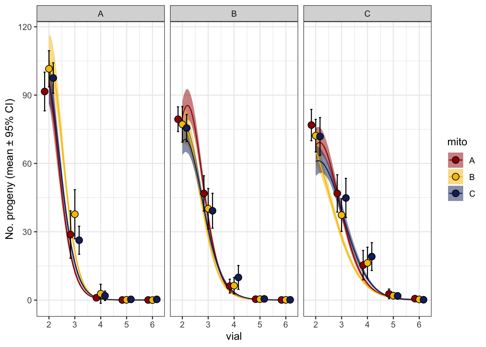
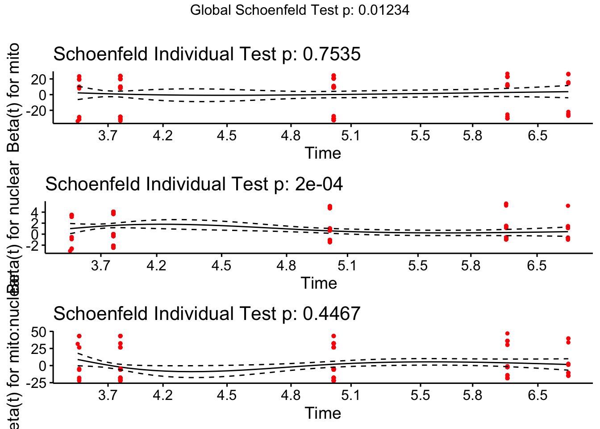

Last updated: 2024-10-11
Checks: 7 0
Knit directory: mito_age_fert/
This reproducible R Markdown analysis was created with workflowr (version 1.7.1). The Checks tab describes the reproducibility checks that were applied when the results were created. The Past versions tab lists the development history.
Great! Since the R Markdown file has been committed to the Git repository, you know the exact version of the code that produced these results.
Great job! The global environment was empty. Objects defined in the global environment can affect the analysis in your R Markdown file in unknown ways. For reproduciblity it’s best to always run the code in an empty environment.
The command set.seed(20230213) was run prior to running
the code in the R Markdown file. Setting a seed ensures that any results
that rely on randomness, e.g. subsampling or permutations, are
reproducible.
Great job! Recording the operating system, R version, and package versions is critical for reproducibility.
Nice! There were no cached chunks for this analysis, so you can be confident that you successfully produced the results during this run.
Great job! Using relative paths to the files within your workflowr project makes it easier to run your code on other machines.
Great! You are using Git for version control. Tracking code development and connecting the code version to the results is critical for reproducibility.
The results in this page were generated with repository version 0f5ea81. See the Past versions tab to see a history of the changes made to the R Markdown and HTML files.
Note that you need to be careful to ensure that all relevant files for
the analysis have been committed to Git prior to generating the results
(you can use wflow_publish or
wflow_git_commit). workflowr only checks the R Markdown
file, but you know if there are other scripts or data files that it
depends on. Below is the status of the Git repository when the results
were generated:
Ignored files:
Ignored: .DS_Store
Ignored: .Rhistory
Ignored: .Rproj.user/
Ignored: analysis/.DS_Store
Ignored: analysis/figure/
Ignored: data/.DS_Store
Untracked files:
Untracked: README.html
Untracked: check_lines.R
Untracked: code/data_wrangling.R
Untracked: code/plotting_Script.R
Untracked: data/Data_raw_emmely.csv
Untracked: data/defence.csv
Untracked: data/male_fertility.csv
Untracked: data/mito_34sigdiffSNPs_consensus_incl_colnames.csv
Untracked: data/mito_mt_copy_number.xlsx
Untracked: data/mito_mt_seq_major_alleles_sig_snptable.csv
Untracked: data/mito_mt_seq_sig_annotated.csv
Untracked: data/mito_mt_seq_sig_annotated.vcf
Untracked: data/offence.csv
Untracked: data/rawdata_PCA.csv
Untracked: data/snp-gene.txt
Untracked: data/sperm_metabolic_rate.csv
Untracked: data/sperm_viability.csv
Untracked: data/wrangled/
Untracked: figures/
Untracked: output/SNP_clusters.csv
Untracked: output/bod_brm.rds
Untracked: output/female_rate_dredge.rds
Untracked: output/female_rates_bb.Rdata
Untracked: output/female_rates_boot.Rdata
Untracked: output/female_rates_poly.Rdata
Untracked: output/male_fec_dredge.rds
Untracked: output/male_hatch_dredge.rds
Untracked: output/male_hatch_dredge_reduced.rds
Untracked: output/sperm_met_dredge.rds
Untracked: output/viab_ctrl_dredge.rds
Untracked: output/viab_trt_dredge.rds
Untracked: snp_matrix_dobler.csv
Unstaged changes:
Deleted: analysis/sperm_comp.Rmd
Modified: data/README.md
Note that any generated files, e.g. HTML, png, CSS, etc., are not included in this status report because it is ok for generated content to have uncommitted changes.
These are the previous versions of the repository in which changes were
made to the R Markdown (analysis/female_fertility.Rmd) and
HTML (docs/female_fertility.html) files. If you’ve
configured a remote Git repository (see ?wflow_git_remote),
click on the hyperlinks in the table below to view the files as they
were in that past version.
| File | Version | Author | Date | Message |
|---|---|---|---|---|
| Rmd | 0f5ea81 | MartinGarlovsky | 2024-10-11 | wflow_publish("analysis/female_fertility.Rmd") |
| html | 2ee8510 | MartinGarlovsky | 2024-10-09 | Build site. |
| Rmd | 2eea37b | MartinGarlovsky | 2024-10-09 | wflow_publish("analysis/female_fertility.Rmd") |
library(tidyverse)
library(lme4)
#library(merTools)
library(DHARMa)
library(emmeans)
library(kableExtra)
library(knitrhooks) # install with devtools::install_github("nathaneastwood/knitrhooks")
library(showtext)
library(conflicted)
select <- dplyr::select
filter <- dplyr::filter
output_max_height() # a knitrhook option
options(stringsAsFactors = FALSE)
# colour palettes
met.pal <- MetBrewer::met.brewer('Johnson')
met3 <- met.pal[c(1, 3, 5)]
# set contrasts
options(contrasts = c("contr.sum", "contr.poly"))fert_dat <- read_csv("data/wrangled/female_fertility.csv") %>%
mutate(mito_snp = as.factor(mito_snp),
coevolved = if_else(mito == nuclear, "matched", "mismatched"))First look at the data shows that fecundity appears to plateau between the first and second vial before declining. Therefore, we model fecundity across three episodes:
# progeny by mito / nuclear
fert_dat %>%
group_by(mito, nuclear, vial) %>%
summarise(mn = mean(progeny),
se = sd(progeny)/sqrt(n()),
s95 = se * 1.96) %>%
ggplot(aes(x = vial, y = mn, colour = mito)) +
geom_point(data = fert_dat,
aes(y = progeny, colour = mito), alpha = .15,
position = position_jitterdodge(dodge.width = .5, jitter.width = .1)) +
geom_ribbon(aes(ymin = mn - s95, ymax = mn + s95, fill = mito, group = mito),
alpha = .5, colour = NA) +
geom_errorbar(aes(ymin = mn - s95, ymax = mn + s95),
width = .25, position = position_dodge(width = .5)) +
geom_point(position = position_dodge(width = .5)) +
geom_line(aes(group = nuclear)) +
facet_wrap(~nuclear) +
scale_x_continuous(breaks = c(1:7)) +
scale_colour_manual(values = met3) +
scale_fill_manual(values = met3) +
labs(y = 'Fecundity per vial (EMM ± 95% CIs)') +
theme_bw() +
theme() +
#ggsave('figures/vial_means.pdf', height = 3, width = 9, dpi = 600, useDingbats = FALSE) +
NULL
| Version | Author | Date |
|---|---|---|
| 2ee8510 | MartinGarlovsky | 2024-10-09 |
Figure 1. Per vial progeny production for each mitonculear genotype. Facets are nuclear genotypes, with colour denoting mitochondrial genotype.
We summed progeny produced from the first two vial for each female.
daydat <- fert_dat %>% filter(vial == '1' | vial == '2') %>%
dplyr::select(ID:mtn, mito_snp, coevolved, LINE, vial, progeny) %>%
pivot_wider(names_from = vial,
values_from = progeny) %>%
dplyr::rename(v1 = `1`, v2 = `2`) %>%
mutate(comb_vial = rowSums(across(c(v1, v2))))
daydat %>% pivot_longer(cols = c(v1, v2)) %>% #filter(age == "young") %>%
ggplot(aes(x = name, y = value)) +
geom_line(aes(group = ID, colour = mito)) +
tidybayes::stat_halfeye(alpha = .5) +
scale_colour_manual(values = met3) +
labs(y = 'Female fecundity') +
facet_grid(mito ~ nuclear) +
NULL
| Version | Author | Date |
|---|---|---|
| 2ee8510 | MartinGarlovsky | 2024-10-09 |
Figure 2. Female fecundity in vial 1 and vial 2. Facets are for mito and nuclear genotypes. Lines connect individual females with large points representing the mean and error bars summarise the 66% and 95% quantiles.
# combined vial 1 and vial 2
#hist(daydat$comb_vial)fecundity_early <- lmerTest::lmer(comb_vial ~ mito * nuclear + (1|LINE), data = daydat, REML = TRUE)performance::check_model(fecundity_early)
| Version | Author | Date |
|---|---|---|
| 2ee8510 | MartinGarlovsky | 2024-10-09 |
anova(fecundity_early, type = "III", ddf = "Kenward-Roger") %>% broom::tidy() %>%
as_tibble() %>%
kable(digits = 3,
caption = 'Type III Analysis of Variance Table with Kenward-Roger`s method') %>%
kable_styling(full_width = FALSE)| term | sumsq | meansq | NumDF | DenDF | statistic | p.value |
|---|---|---|---|---|---|---|
| mito | 1548.543 | 774.272 | 2 | 17.787 | 0.714 | 0.503 |
| nuclear | 39590.215 | 19795.107 | 2 | 17.765 | 18.266 | 0.000 |
| mito:nuclear | 3322.807 | 830.702 | 4 | 17.750 | 0.767 | 0.561 |
emmeans(fecundity_early, pairwise ~ nuclear, adjust = "tukey")$contrasts %>% broom::tidy() %>%
kable(digits = 3,
caption = 'Posthoc Tukey tests for days effect. Results are averaged over the levels of mito') %>%
kable_styling(full_width = FALSE)| term | contrast | null.value | estimate | std.error | df | statistic | adj.p.value |
|---|---|---|---|---|---|---|---|
| nuclear | A - B | 0 | 30.404 | 6.216 | 17.556 | 4.891 | 0.000 |
| nuclear | A - C | 0 | 35.172 | 6.341 | 18.553 | 5.547 | 0.000 |
| nuclear | B - C | 0 | 4.768 | 6.222 | 17.269 | 0.766 | 0.728 |
coevo_early <- lmerTest::lmer(comb_vial ~ coevolved + (1|LINE), data = daydat, REML = TRUE)
anova(coevo_early, type = "III", ddf = "Kenward-Roger")Type III Analysis of Variance Table with Kenward-Roger's method
Sum Sq Mean Sq NumDF DenDF F value Pr(>F)
coevolved 509.6 509.6 1 25.442 0.4702 0.4991
fecundity_day1_snp <- lmerTest::lmer(comb_vial ~ mito_snp * nuclear + (1|LINE), data = daydat, REML = TRUE)
anova(fecundity_day1_snp, type = "III", ddf = "Kenward-Roger")Type III Analysis of Variance Table with Kenward-Roger's method
Sum Sq Mean Sq NumDF DenDF F value Pr(>F)
mito_snp 4327.1 540.9 8 8.6615 0.4991 0.82890
nuclear 15644.0 7822.0 2 9.2612 7.2131 0.01292 *
mito_snp:nuclear 10169.7 1452.8 7 8.9663 1.3398 0.33402
---
Signif. codes: 0 '***' 0.001 '**' 0.01 '*' 0.05 '.' 0.1 ' ' 1
early_fec_snp <- emmeans(fecundity_day1_snp, ~ mito_snp * nuclear, type = 'response') %>%
as_tibble() %>% drop_na() %>%
ggplot(aes(x = nuclear, y = emmean, fill = mito_snp)) +
geom_jitter(data = daydat,
aes(y = comb_vial, colour = mito_snp),
position = position_jitterdodge(dodge.width = .5, jitter.width = .1),
alpha = .25) +
geom_errorbar(aes(ymin = lower.CL, ymax = upper.CL),
width = .25, position = position_dodge(width = .5)) +
geom_point(size = 3, pch = 21, position = position_dodge(width = .5)) +
labs(y = 'Early life fecundity (EMM ± 95% CIs)') +
scale_colour_viridis_d(option = "H") +
scale_fill_viridis_d(option = "H") +
theme_bw() +
theme() +
NULL
early_fec_snp
| Version | Author | Date |
|---|---|---|
| 2ee8510 | MartinGarlovsky | 2024-10-09 |
Here we sum the total number of offspring each female produced across the entire 21 days.
# summarised data
sum_fecundity <- fert_dat %>%
group_by(ID, mito, mito_snp, mtgrp, nuclear, mtn, coevolved, LINE) %>%
summarise(total.fec = sum(progeny)) %>%
ungroup() %>%
mutate(# scale variables
scaled_fec = as.numeric(scale(total.fec)),
# add observation level random effect
OLRE = 1:nrow(.))
# check mtgrp not crossed within lines
#xtabs(~ LINE + mtgrp, data = sum_fecundity)
hist(sum_fecundity$total.fec, breaks = 50)
| Version | Author | Date |
|---|---|---|
| 2ee8510 | MartinGarlovsky | 2024-10-09 |
# fit linear fit
fecundity_total <- lmerTest::lmer(total.fec ~ mito * nuclear + (1|LINE), data = sum_fecundity, REML = TRUE)performance::check_model(fecundity_total)
| Version | Author | Date |
|---|---|---|
| 2ee8510 | MartinGarlovsky | 2024-10-09 |
anova(fecundity_total, type = "III", ddf = "Kenward-Roger")Type III Analysis of Variance Table with Kenward-Roger's method
Sum Sq Mean Sq NumDF DenDF F value Pr(>F)
mito 2951.2 1475.6 2 17.582 0.4769 0.6285
nuclear 7986.8 3993.4 2 17.533 1.2906 0.3000
mito:nuclear 16005.0 4001.2 4 17.511 1.2931 0.3108
# grand mean
#emmeans::emmeans(fecundity_total, specs = ~1, type = "response")fecundity_coevo <- lmerTest::lmer(total.fec ~ coevolved + (1|LINE), data = sum_fecundity, REML = TRUE)
anova(fecundity_coevo, type = "III", ddf = "Kenward-Roger")Type III Analysis of Variance Table with Kenward-Roger's method
Sum Sq Mean Sq NumDF DenDF F value Pr(>F)
coevolved 2391.7 2391.7 1 25.446 0.7729 0.3875
fecundity_lmer_snp <- lmerTest::lmer(total.fec ~ mito_snp * nuclear + (1|LINE), data = sum_fecundity)
anova(fecundity_lmer_snp, type = "III", ddf = "Kenward-Roger")Type III Analysis of Variance Table with Kenward-Roger's method
Sum Sq Mean Sq NumDF DenDF F value Pr(>F)
mito_snp 19929 2491.2 8 8.1317 0.8067 0.6154
nuclear 41 20.4 2 9.5863 0.0066 0.9934
mito_snp:nuclear 47266 6752.3 7 8.6974 2.1827 0.1399
lifetime_fec_snp <- emmeans(fecundity_lmer_snp, ~ mito_snp * nuclear) %>% as_tibble() %>% drop_na() %>%
ggplot(aes(x = nuclear, y = emmean, fill = mito_snp)) +
geom_jitter(data = sum_fecundity,
aes(y = total.fec, colour = mito_snp),
position = position_jitterdodge(dodge.width = .5, jitter.width = .1),
alpha = .5) +
geom_errorbar(aes(ymin = lower.CL, ymax = upper.CL),
width = .25, position = position_dodge(width = .5)) +
geom_point(size = 3, pch = 21, position = position_dodge(width = .5)) +
labs(y = 'Lifetime fecundity (EMM ± 95% CIs)',
colour = 'nuclear', fill = 'nuclear') +
scale_colour_viridis_d(option = "H") +
scale_fill_viridis_d(option = "H") +
theme_bw() +
#theme(legend.position = 'bottom') +
NULL
lifetime_fec_snp
| Version | Author | Date |
|---|---|---|
| 2ee8510 | MartinGarlovsky | 2024-10-09 |
We modelled the rate of progeny production using a GLMM during the period of decline, namely from vial 2 to 6 (excluding vials 1 and 7). A quick plot of the data suggests a non-linear relationship between progeny production and vial.
fert_filt <- fert_dat %>% filter(vial != '1', vial <= 6)fert_filt %>%
ggplot(aes(x = vial, y = progeny, colour = mito)) +
geom_point(alpha = .25, position = position_dodge(width = .5)) +
stat_smooth(method = "lm", formula = y ~ poly(x, 1), colour = "black") +
facet_wrap(~ nuclear) +
scale_x_continuous(breaks = c(1:7)) +
scale_colour_manual(values = met3) +
scale_fill_manual(values = met3) +
theme_bw() +
theme() +
NULL
| Version | Author | Date |
|---|---|---|
| 2ee8510 | MartinGarlovsky | 2024-10-09 |
fert_filt %>%
ggplot(aes(x = vial, y = progeny, colour = mito)) +
geom_point(alpha = .25, position = position_dodge(width = .5)) +
stat_smooth(method = "lm", formula = y ~ poly(x, 2), colour = "black") +
facet_wrap(~ nuclear) +
scale_x_continuous(breaks = c(1:7)) +
scale_colour_manual(values = met3) +
scale_fill_manual(values = met3) +
theme_bw() +
theme() +
NULL
| Version | Author | Date |
|---|---|---|
| 2ee8510 | MartinGarlovsky | 2024-10-09 |
We compared a linear fit to a polynomial fit. Based on AICc, the second order polynomial fit is preferred.
# fit model
rate_glmm <- glmer(progeny ~ mito * nuclear * vial + (1|LINE:vial) + (1|ID) + (1|OLRE),
data = fert_filt, family = 'poisson',
control = glmerControl(optimizer = "bobyqa", optCtrl = list(maxfun = 50000)))
# fit model
rate_poly <- glmer(progeny ~ mito * nuclear * vial + I(vial^2) + (1|LINE:vial) + (1|ID) + (1|OLRE),
data = fert_filt, family = 'poisson',
control = glmerControl(optimizer = "bobyqa", optCtrl = list(maxfun = 50000)))
MuMIn::AICc(rate_glmm, rate_poly)df AICc rate_glmm 21 9824.599 rate_poly 22 9809.792
performance::check_model(rate_poly)
| Version | Author | Date |
|---|---|---|
| 2ee8510 | MartinGarlovsky | 2024-10-09 |
performance::check_overdispersion(rate_poly) # not overdispersed# Overdispersion test
dispersion ratio = 0.334
Pearson's Chi-Squared = 557.699
p-value = 1
performance::check_zeroinflation(rate_poly) # zero inflated# Check for zero-inflation
Observed zeros: 788
Predicted zeros: 669
Ratio: 0.85
testDispersion(rate_poly)
| Version | Author | Date |
|---|---|---|
| 2ee8510 | MartinGarlovsky | 2024-10-09 |
DHARMa nonparametric dispersion test via sd of residuals fitted vs.
simulated
data: simulationOutput
dispersion = 0.00862, p-value < 2.2e-16
alternative hypothesis: two.sided
simulationOutput <- simulateResiduals(fittedModel = rate_poly, plot = FALSE)
testZeroInflation(simulationOutput)
| Version | Author | Date |
|---|---|---|
| 2ee8510 | MartinGarlovsky | 2024-10-09 |
DHARMa zero-inflation test via comparison to expected zeros with
simulation under H0 = fitted model
data: simulationOutput
ratioObsSim = 1.2374, p-value < 2.2e-16
alternative hypothesis: two.sided
hist(residuals(simulationOutput))
| Version | Author | Date |
|---|---|---|
| 2ee8510 | MartinGarlovsky | 2024-10-09 |
hist(residuals(simulationOutput, quantileFunction = qnorm, outlierValues = c(-7,7)))
| Version | Author | Date |
|---|---|---|
| 2ee8510 | MartinGarlovsky | 2024-10-09 |
plot(simulationOutput)
| Version | Author | Date |
|---|---|---|
| 2ee8510 | MartinGarlovsky | 2024-10-09 |
car::Anova(rate_poly, type = 'III')Analysis of Deviance Table (Type III Wald chisquare tests)
Response: progeny
Chisq Df Pr(>Chisq)
(Intercept) 221.0932 1 < 2.2e-16 ***
mito 2.1116 2 0.34791
nuclear 35.7304 2 1.743e-08 ***
vial 9.0479 1 0.00263 **
I(vial^2) 19.6275 1 9.411e-06 ***
mito:nuclear 2.6912 4 0.61076
mito:vial 4.3477 2 0.11374
nuclear:vial 84.1731 2 < 2.2e-16 ***
mito:nuclear:vial 3.2873 4 0.51095
---
Signif. codes: 0 '***' 0.001 '**' 0.01 '*' 0.05 '.' 0.1 ' ' 1
#summary(rate_glmm)
emt <- emtrends(rate_poly, "nuclear", var = "vial")
#pairs(emt)
rate_norms <- emtrends(rate_poly, c("mito", "nuclear"), var = "vial") %>% as_tibble() %>%
ggplot(aes(x = nuclear, y = vial.trend, fill = mito)) +
geom_line(aes(group = mito, colour = mito), position = position_dodge(width = .5)) +
geom_point(size = 3, pch = 21, position = position_dodge(width = .5)) +
labs(y = 'Fecundity (EMM)') +
scale_colour_manual(values = met3) +
scale_fill_manual(values = met3) +
theme_bw() +
theme() +
NULLHere we generate model predicted values for a model with a simplified random effects structure. This is unused in the manuscript at present.
# reduced model for predicted values
# # plot data and model fit
rate_glmm_dummy <- glmer(progeny ~ mito * nuclear * vial + I(vial^2) + (1 + vial|LINE),
data = fert_filt, family = 'poisson',
control = glmerControl(optimizer = "bobyqa", optCtrl = list(maxfun = 50000)))
#car::Anova(rate_glmm_dummy, type = 'III')
prediction_data <- expand.grid(vial = seq(from = 2, to = 6, length = 100),
#ID = unique(fert_filt$ID),
#OLRE = unique(fert_filt$OLRE),
LINE = levels(as.factor(fert_filt$LINE))) %>%
mutate(mito = str_sub(LINE, 1, 1),
nuclear = str_sub(LINE, 2, 2))
mySumm <- function(.) {
predict(., newdata=prediction_data, re.form=NULL)
}
####Collapse bootstrap into median, 95% PI
sumBoot <- function(merBoot) {
return(
data.frame(fit = apply(merBoot$t, 2, function(x) as.numeric(quantile(x, probs=.5, na.rm=TRUE))),
lwr = apply(merBoot$t, 2, function(x) as.numeric(quantile(x, probs=.025, na.rm=TRUE))),
upr = apply(merBoot$t, 2, function(x) as.numeric(quantile(x, probs=.975, na.rm=TRUE)))
)
)
}
### Reader beware - this takes a long time to run!!!
##lme4::bootMer() method 2
# PI.boot2.time <- system.time(
# boot2 <- lme4::bootMer(rate_glmm_dummy, mySumm, nsim=1000, use.u=TRUE, type="parametric", .progress = "txt")
# )
##saveRDS(boot2, file = "output/female_rates_poly.Rdata")
boot2 <- read_rds("output/female_rates_poly.Rdata")
PI.boot2 <- sumBoot(boot2)
plot_data <- data.frame(prediction_data, PI.boot2)
#head(plot_data)
colnames(plot_data)[5] <- "progeny"
plot_data_summary <- plot_data %>%
group_by(mito, nuclear, vial) %>%
summarise(mn_fit = mean(progeny),
#mn_sef = mean(se.fit),
mn_lwr = mean(lwr),
mn_upr = mean(upr)
) %>%
ungroup() %>% mutate(across(4:6, ~exp(.x)))
# plot
fert_mns <- fert_filt %>%
group_by(mito, nuclear, vial) %>%
summarise(mn = mean(progeny),
se = sd(progeny)/sqrt(n()),
s95 = se * 1.96)
rateP <- fert_filt %>%
ggplot(aes(x = vial, y = progeny, colour = mito)) +
geom_point(aes(y = progeny, colour = mito, shape = mito), alpha = .15,
position = position_jitterdodge(dodge.width = .5, jitter.width = .1)) +
geom_ribbon(data = plot_data_summary,
aes(y = mn_fit, ymin = mn_lwr, ymax = mn_upr, fill = mito, group = mito),
alpha = .5, colour = NA) +
geom_line(data = plot_data_summary,
aes(y = mn_fit, colour = mito, group = mito)) +
geom_errorbar(data = fert_mns,
aes(y = mn, ymin = mn - s95, ymax = mn + s95),
width = .25, position = position_dodge(width = .5)) +
geom_point(data = fert_mns, aes(y = mn), position = position_dodge(width = .5)) +
scale_x_continuous(breaks = c(1:7)) +
scale_colour_manual(values = met3) +
scale_fill_manual(values = met3) +
labs(y = 'Fecundity per vial (mean ± SE)') +
facet_wrap(~ nuclear) +
theme_bw() +
theme() +
#ggsave('figures/vial_means.pdf', height = 3, width = 9, dpi = 600, useDingbats = FALSE) +
NULL
rateP
| Version | Author | Date |
|---|---|---|
| 2ee8510 | MartinGarlovsky | 2024-10-09 |
# raw data
fem_fert_rawplot <- fert_dat %>%
group_by(mito, nuclear, vial) %>%
summarise(mn = mean(progeny),
se = sd(progeny)/sqrt(n()),
s95 = se * 1.96) %>%
ggplot(aes(x = vial, y = mn, colour = mito)) +
geom_point(data = fert_dat,
aes(y = progeny, colour = mito), alpha = .15,
position = position_jitterdodge(dodge.width = .5, jitter.width = .1)) +
geom_errorbar(aes(ymin = mn - s95, ymax = mn + s95),
width = .25, position = position_dodge(width = .5)) +
geom_point(position = position_dodge(width = .5)) +
scale_x_continuous(breaks = c(1:7)) +
scale_colour_manual(values = met3) +
scale_fill_manual(values = met3) +
labs(y = 'Fecundity per vial (mean ± SE)') +
facet_wrap(~ nuclear) +
theme_bw() +
theme() +
NULL
#ggsave(filename = 'figures/fem_fert_rawplot.pdf', height = 4, width = 9, dpi = 600, useDingbats = FALSE)rate_coevo <- glmer(progeny ~ coevolved * vial + (1|LINE:vial) + (1|ID) + (1|OLRE),
data = fert_filt, family = 'poisson',
control = glmerControl(optimizer = "bobyqa", optCtrl = list(maxfun = 50000)))
car::Anova(rate_coevo, type = 'III')Analysis of Deviance Table (Type III Wald chisquare tests)
Response: progeny
Chisq Df Pr(>Chisq)
(Intercept) 1135.0369 1 <2e-16 ***
coevolved 0.0319 1 0.8581
vial 885.9213 1 <2e-16 ***
coevolved:vial 0.0069 1 0.9338
---
Signif. codes: 0 '***' 0.001 '**' 0.01 '*' 0.05 '.' 0.1 ' ' 1
# fit model
rate_glmm_snp <- glmer(progeny ~ mito_snp * nuclear * vial + (1|LINE:vial) + (1|ID) + (1|OLRE),
data = fert_filt, family = 'poisson',
control= glmerControl(optimizer="bobyqa", optCtrl=list(maxfun=50000)))
car::Anova(rate_glmm_snp, type = 'III')Analysis of Deviance Table (Type III Wald chisquare tests)
Response: progeny
Chisq Df Pr(>Chisq)
(Intercept) 157.6550 1 < 2e-16 ***
mito_snp 6.5879 8 0.58168
nuclear 0.2651 2 0.87588
vial 117.0384 1 < 2e-16 ***
mito_snp:nuclear 5.1144 7 0.64600
mito_snp:vial 13.9589 8 0.08284 .
nuclear:vial 2.6662 2 0.26366
mito_snp:nuclear:vial 9.3443 7 0.22887
---
Signif. codes: 0 '***' 0.001 '**' 0.01 '*' 0.05 '.' 0.1 ' ' 1
#summary(rate_glmm_snp)comb_all_female <- bind_rows(
emmeans(fecundity_early, ~ mito * nuclear) %>% as_tibble() %>% mutate(stage = "a) Early life"),
emmeans(fecundity_total, ~ mito * nuclear) %>% as_tibble() %>% mutate(stage = "b) Lifetime"),
emtrends(rate_glmm, c("mito", "nuclear"), var = "vial") %>% as_tibble() %>%
mutate(stage = "c) Rate of decline",
emmean = vial.trend)) %>%
ggplot(aes(x = nuclear, y = emmean, fill = mito)) +
geom_line(aes(group = mito, colour = mito), position = position_dodge(width = .5)) +
geom_point(size = 3, pch = 21, position = position_dodge(width = .5)) +
labs(y = 'Fecundity (EMM)') +
scale_colour_manual(values = met3) +
scale_fill_manual(values = met3) +
facet_wrap(~stage, scales = "free_y") +
theme_bw() +
theme() +
NULL
comb_all_female
| Version | Author | Date |
|---|---|---|
| 2ee8510 | MartinGarlovsky | 2024-10-09 |
#ggsave(filename = 'figures/femaleplot_norms3.pdf', height = 4, width = 12, dpi = 600, useDingbats = FALSE)Finally, we modelled reproductive senescence using survival analysis based on the onset of infertility, i.e., the time (in vials) to event (final vial producing progeny for each female) as the response.
library(coxme)
library(survminer)
fsurv <- fert_dat %>%
mutate(bin_prog = if_else(progeny == 0, 0, 1),
mito_snp = as.factor(mito_snp))
fsurv$cum_pr <- ave(fsurv$progeny, fsurv$ID, FUN = cumsum)
fsurv <- fsurv %>% group_by(ID) %>% slice(which.min(progeny)) %>% mutate(EVENT = 1)
fit1 <- survfit(Surv(vial, EVENT) ~ mito + nuclear, data = fsurv)
#summary(fit1)
#anova(fit1)
survplot <- ggsurvplot(fit1, colour = "mito",
palette = rep(rev(met3), 3))
survplot$plot +
facet_wrap(~nuclear) +
theme_bw() +
theme(legend.position = "") +
NULL
| Version | Author | Date |
|---|---|---|
| 2ee8510 | MartinGarlovsky | 2024-10-09 |
Using a simplified model without the random effects we can check the proportional hazards assumption.
plot(survfit(Surv(vial, EVENT) ~ mito + nuclear, data = fsurv),
lty = 1:4,
fun="cloglog", main = "cloglog")
| Version | Author | Date |
|---|---|---|
| 2ee8510 | MartinGarlovsky | 2024-10-09 |
test.ph <- cox.zph(coxph(Surv(vial, EVENT) ~ mito * nuclear, data = fsurv))
ggcoxzph(test.ph)
| Version | Author | Date |
|---|---|---|
| 2ee8510 | MartinGarlovsky | 2024-10-09 |
We then use likelihood ratio tests comparing the full model to submodels excluding the effect of interest.
cox.des <- coxme(Surv(vial, EVENT) ~ mito * nuclear + (1|LINE), data = fsurv)
cox.des.n1 <- coxme(Surv(vial, EVENT) ~ 1 + nuclear + (1|LINE), data = fsurv)
cox.des.n2 <- coxme(Surv(vial, EVENT) ~ mito + 1 + (1|LINE), data = fsurv)
cox.des.n3 <- coxme(Surv(vial, EVENT) ~ mito + nuclear + (1|LINE), data = fsurv)
# posthoc tests
bind_rows(anova(cox.des, cox.des.n1) %>% broom::tidy(),
anova(cox.des, cox.des.n2) %>% broom::tidy(),
anova(cox.des, cox.des.n3) %>% broom::tidy()) %>% #drop_na() %>%
kable(digits = 3,
caption = 'Likelihood ratio tests comparing the full model to submodels excluding the main effect of interest') %>%
kable_styling(full_width = FALSE) %>%
kableExtra::group_rows("Mitochondria", 1, 2) %>%
kableExtra::group_rows("Nuclear", 3, 4) %>%
kableExtra::group_rows("Mitonuclear interaction", 5, 6)| term | logLik | statistic | df | p.value |
|---|---|---|---|---|
| Mitochondria | ||||
| ~mito * nuclear + (1 | LINE) | -1605.899 | NA | NA | NA |
| ~1 + nuclear + (1 | LINE) | -1606.570 | 1.341 | 6 | 0.969 |
| Nuclear | ||||
| ~mito * nuclear + (1 | LINE) | -1605.899 | NA | NA | NA |
| ~mito + 1 + (1 | LINE) | -1627.989 | 44.180 | 6 | 0.000 |
| Mitonuclear interaction | ||||
| ~mito * nuclear + (1 | LINE) | -1605.899 | NA | NA | NA |
| ~mito + nuclear + (1 | LINE) | -1606.201 | 0.603 | 4 | 0.963 |
cox_emm <- emmeans(cox.des, ~ mito * nuclear)
# posthoc tests
emmeans(cox_emm, pairwise ~ nuclear, adjust = "tukey")$emmeans nuclear emmean SE df asymp.LCL asymp.UCL A 0.610 0.0840 Inf 0.446 0.7749 B -0.103 0.0723 Inf -0.245 0.0387 C -0.473 0.0811 Inf -0.632 -0.3138 Results are averaged over the levels of: mito Results are given on the log (not the response) scale. Confidence level used: 0.95 $contrasts contrast estimate SE df z.ratio p.value A - B 0.713 0.136 Inf 5.254 <.0001 A - C 1.083 0.142 Inf 7.601 <.0001 B - C 0.370 0.133 Inf 2.786 0.0147 Results are averaged over the levels of: mito Results are given on the log (not the response) scale. P value adjustment: tukey method for comparing a family of 3 estimates
#emmeans(cox_emm, pairwise ~ nuclear, adjust = "tukey", type = "response")
# posthoc tests
bind_rows(emmeans(cox_emm, pairwise ~ nuclear, adjust = "tukey")$contrasts %>% broom::tidy(),
emmeans(cox_emm, pairwise ~ nuclear, adjust = "tukey", type = "response")$contrasts %>% broom::tidy()) %>%
kable(digits = 3,
caption = 'Posthoc Tukey tests to compare which groups differ. Results are averaged over the levels of mito') %>%
kable_styling(full_width = FALSE) %>%
kableExtra::group_rows("log scale", 1, 3) %>%
kableExtra::group_rows("Hazard ratios", 4, 6)| term | contrast | null.value | estimate | std.error | df | statistic | adj.p.value | ratio | null |
|---|---|---|---|---|---|---|---|---|---|
| log scale | |||||||||
| nuclear | A - B | 0 | 0.713 | 0.136 | Inf | 5.254 | 0.000 | NA | NA |
| nuclear | A - C | 0 | 1.083 | 0.142 | Inf | 7.601 | 0.000 | NA | NA |
| nuclear | B - C | 0 | 0.370 | 0.133 | Inf | 2.786 | 0.015 | NA | NA |
| Hazard ratios | |||||||||
| nuclear | A / B | 0 | NA | 0.277 | Inf | 5.254 | 0.000 | 2.041 | 1 |
| nuclear | A / C | 0 | NA | 0.421 | Inf | 7.601 | 0.000 | 2.954 | 1 |
| nuclear | B / C | 0 | NA | 0.192 | Inf | 2.786 | 0.015 | 1.447 | 1 |
cox.coevo <- coxme(Surv(vial, EVENT) ~ coevolved + (1|LINE), data = fsurv)
#anova(cox.coevo)
summary(cox.coevo)Mixed effects coxme model
Formula: Surv(vial, EVENT) ~ coevolved + (1 | LINE)
Data: fsurv
events, n = 338, 338
Random effects:
group variable sd variance
1 LINE Intercept 0.3747831 0.1404624
Chisq df p AIC BIC
Integrated loglik 12.13 2.00 2.320e-03 8.13 0.49
Penalized loglik 54.41 16.58 6.524e-06 21.24 -42.15
Fixed effects:
coef exp(coef) se(coef) z p
coevolved1 0.04908 1.05030 0.09776 0.5 0.616
cox.coevo.n1 <- coxme(Surv(vial, EVENT) ~ 1 + (1|LINE), data = fsurv)
anova(cox.coevo, cox.coevo.n1) # mito NSAnalysis of Deviance Table Cox model: response is Surv(vial, EVENT) Model 1: ~coevolved + (1 | LINE) Model 2: ~1 + (1 | LINE) loglik Chisq Df P(>|Chi|) 1 -1628.0 2 -1628.1 0.2392 1 0.6248
The mito-type analysis throws an error due to the rank deficiency of the design.
# cox.snp <- coxme(Surv(vial, EVENT) ~ mito_snp * nuclear + (1|LINE), data = fsurv)
#
# summary(cox.snp)
#
# cox.snp.n1 <- coxme(Surv(vial, EVENT) ~ 1 + nuclear + (1|LINE), data = fsurv)
# cox.snp.n2 <- coxme(Surv(vial, EVENT) ~ mito_snp + 1 + (1|LINE), data = fsurv)
# cox.snp.n3 <- coxme(Surv(vial, EVENT) ~ mito_snp + nuclear + (1|LINE), data = fsurv)
#
# anova(cox.snp, cox.snp.n1) # mito NS
# anova(cox.snp, cox.snp.n2) # nuclear sig
# anova(cox.snp, cox.snp.n3) # interaction NS
sessionInfo()R version 4.4.0 (2024-04-24) Platform: aarch64-apple-darwin20 Running under: macOS Sonoma 14.6.1 Matrix products: default BLAS: /Library/Frameworks/R.framework/Versions/4.4-arm64/Resources/lib/libRblas.0.dylib LAPACK: /Library/Frameworks/R.framework/Versions/4.4-arm64/Resources/lib/libRlapack.dylib; LAPACK version 3.12.0 locale: [1] en_US.UTF-8/en_US.UTF-8/en_US.UTF-8/C/en_US.UTF-8/en_US.UTF-8 time zone: Europe/London tzcode source: internal attached base packages: [1] stats graphics grDevices utils datasets methods base other attached packages: [1] survminer_0.4.9 ggpubr_0.6.0 coxme_2.2-22 bdsmatrix_1.3-7 [5] survival_3.7-0 conflicted_1.2.0 showtext_0.9-7 showtextdb_3.0 [9] sysfonts_0.8.9 knitrhooks_0.0.4 knitr_1.48 kableExtra_1.4.0 [13] emmeans_1.10.4 DHARMa_0.4.6 lme4_1.1-35.5 Matrix_1.7-0 [17] lubridate_1.9.3 forcats_1.0.0 stringr_1.5.1 dplyr_1.1.4 [21] purrr_1.0.2 readr_2.1.5 tidyr_1.3.1 tibble_3.2.1 [25] ggplot2_3.5.1 tidyverse_2.0.0 workflowr_1.7.1 loaded via a namespace (and not attached): [1] tensorA_0.36.2.1 rstudioapi_0.16.0 jsonlite_1.8.9 [4] datawizard_0.13.0 magrittr_2.0.3 estimability_1.5.1 [7] farver_2.1.2 nloptr_2.1.1 rmarkdown_2.28 [10] fs_1.6.4 vctrs_0.6.5 MetBrewer_0.2.0 [13] memoise_2.0.1 minqa_1.2.8 rstatix_0.7.2 [16] htmltools_0.5.8.1 distributional_0.5.0 broom_1.0.7 [19] tidybayes_3.0.7 Formula_1.2-5 sass_0.4.9 [22] bslib_0.8.0 pbkrtest_0.5.3 plyr_1.8.9 [25] zoo_1.8-12 cachem_1.1.0 whisker_0.4.1 [28] mime_0.12 lifecycle_1.0.4 iterators_1.0.14 [31] pkgconfig_2.0.3 gap_1.6 R6_2.5.1 [34] fastmap_1.2.0 shiny_1.9.1 rbibutils_2.3 [37] digest_0.6.37 numDeriv_2016.8-1.1 colorspace_2.1-1 [40] patchwork_1.3.0 ps_1.8.0 rprojroot_2.0.4 [43] qgam_1.3.4 labeling_0.4.3 km.ci_0.5-6 [46] fansi_1.0.6 timechange_0.3.0 httr_1.4.7 [49] abind_1.4-8 mgcv_1.9-1 compiler_4.4.0 [52] bit64_4.5.2 withr_3.0.1 doParallel_1.0.17 [55] backports_1.5.0 carData_3.0-5 performance_0.12.3 [58] highr_0.11 ggsignif_0.6.4 MASS_7.3-61 [61] tools_4.4.0 httpuv_1.6.15 glue_1.8.0 [64] callr_3.7.6 nlme_3.1-166 promises_1.3.0 [67] grid_4.4.0 checkmate_2.3.2 getPass_0.2-4 [70] see_0.9.0 generics_0.1.3 gtable_0.3.5 [73] KMsurv_0.1-5 tzdb_0.4.0 data.table_1.16.0 [76] hms_1.1.3 car_3.1-3 xml2_1.3.6 [79] utf8_1.2.4 ggrepel_0.9.6 foreach_1.5.2 [82] pillar_1.9.0 ggdist_3.3.2 vroom_1.6.5 [85] posterior_1.6.0 later_1.3.2 splines_4.4.0 [88] lattice_0.22-6 bit_4.5.0 tidyselect_1.2.1 [91] git2r_0.33.0 gridExtra_2.3 arrayhelpers_1.1-0 [94] svglite_2.1.3 stats4_4.4.0 xfun_0.48 [97] MuMIn_1.48.4 stringi_1.8.4 yaml_2.3.10 [100] boot_1.3-31 codetools_0.2-20 evaluate_1.0.0 [103] cli_3.6.3 xtable_1.8-4 systemfonts_1.1.0 [106] Rdpack_2.6.1 munsell_0.5.1 processx_3.8.4 [109] jquerylib_0.1.4 survMisc_0.5.6 Rcpp_1.0.13 [112] coda_0.19-4.1 svUnit_1.0.6 parallel_4.4.0 [115] bayestestR_0.14.0 gap.datasets_0.0.6 viridisLite_0.4.2 [118] mvtnorm_1.3-1 lmerTest_3.1-3 scales_1.3.0 [121] insight_0.20.5 crayon_1.5.3 rlang_1.1.4